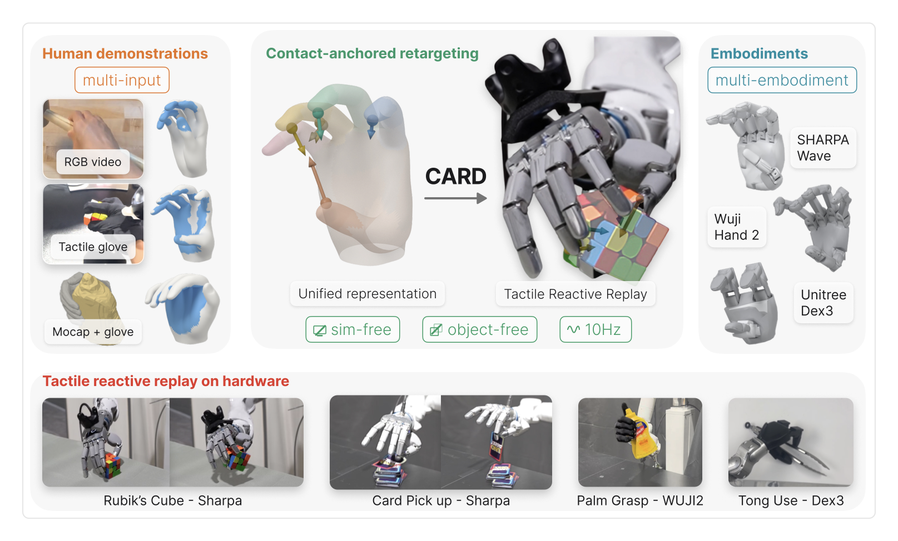

Can you believe these are open-loop rollouts?
How far can we go by replicating human contacts?
Excited to introduce CARD 🃏 — Contact-Anchored Retargeting for Dexterous Manipulation. CARD preserves where and how the hand makes contact.
📹 Video, tactile gloves, or mocap
🤖 Across different robot hands
⚡ No object models, no simulator, 10 Hz
hero.mp4 — open-loop hardware reel
128
542
2.1K
87K
🃏
CARD@CARD_retarget·now
Contact is the heart of manipulation.
Learning from human demonstrations requires preserving contact. Object motion is not mandatory — and it is insufficient.
We need to extract contact, preserve contact, and replicate contact.
The same demonstration, a different hand:
crossemb_same_demo_diff_hand.mp4 — SHARPA vs Wuji + multi-hand gallery
🃏
CARD@CARD_retarget·now
We extract contact from multiple data sources.
Smartphone video, tactile gloves, motion capture — whatever source provides hand pose + contact, CARD can work with it.
Everything funnels into one unified hand-contact representation: one contact anchor per hand region.
slide5_multisource.mp4 — slide 5, rendered (6 s)
🃏
CARD@CARD_retarget·now
No glove? Vid-HACO, our video-to-contact model, estimates hand contact directly from monocular video.
On held-out HRDexDB it beats image-based HACO: vertex F1 63.3 → 67.2, AP 54.3 → 72.2.
toytruck_sidebyside.mp4 — HACO vs Vid-HACO
🃏
CARD@CARD_retarget·now
Preserving contact is the primary goal of our retargeting.
Given the unified contact representation from any data source, we first initialize the solve with geometric initialization, then contact-anchored retargeting aligns the corresponding robot pads with the contact force.
Check out the interactive demo of every stage on our website 👇

mainfig_pipeline.png — paper main figure
🃏
CARD@CARD_retarget·now
How often does the retargeted hand actually keep contact?
Kinematic baselines: <5% of frames
Object-aware retargeting: 22.5%
CARD: 43.1%
Dropping our contact costs into physics-based retargeting lifts strict GRAB task success from 12% → 32%.
Finally, replay needs feedback: a tactile tracking controller holds the contact-force targets on hardware.
Contact is richer than object motion — imagine applying force on a still object.
Position-only → with tracker:
🔨 hammer lift 1/10 → 8/10
🥤 cup lift 3/10 → 10/10
🟡 mustard dispense 0/10 → 7/10
tracker_onoff_3col.mp4 — tracker on vs off, 3 tasks
🃏
CARD@CARD_retarget·now
Check out our work:
💻 Code: release soon
🌐 Project page: https://card-retargeting.github.io
📄 Paper: arXiv soon
And yes — it flips cards five times in a row, open-loop. 🃏